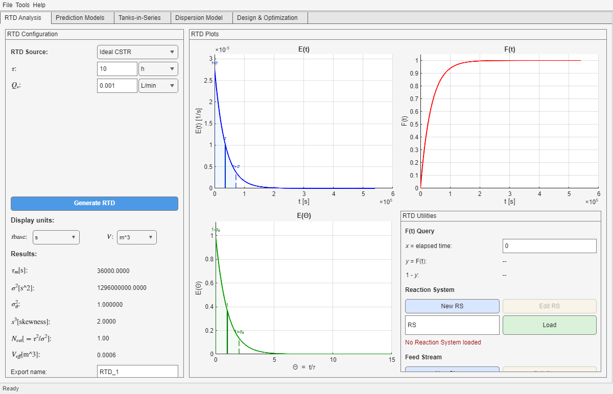

Use this tab to generate or import the residence time distribution of the reactor. It is the hydrodynamic foundation of the app: the RTD created here can be reused by Prediction Models, Tanks-in-Series, Dispersion Model, and Design & Optimization.
When to Use This Tab
When you need to define the RTD from theory, experimental data, a custom equation, or a manual table.
When you need the characteristic moments: τ, σ2, σθ2, skewness, estimated N, and effective volume.
When you want to prepare the hydrodynamic input that later tabs will consume.
Practical rule: if you are unsure where to begin, begin here. Most downstream errors come from an RTD that was never generated, was generated with inconsistent units, or does not match the intended reactor.
Main UI Areas

Representative view of Tab 1 after generating a simple analytical RTD. The left panel configures the source and shows moments; the right area shows E(t), F(t), and E(θ).
Left panel: configuration and moments
RTD Source selects the route used to build the RTD.
Core fields include residence time, volumetric flow, and model-specific parameters such as N or Bo.
Experimental routes expose fields for workspace variables, files, equation segments, or table rows.
Results display the characteristic moments after generation.
Right area: plots and utilities
E(t) shows the RTD in dimensional time.
F(t) shows the cumulative response and supports point queries.
E(θ) shows the normalized RTD.
Utilities let you evaluate F(t) and launch ReactionSys / Stream editors from this tab.
RTD Sources Available in the Current App
Source
Use it when...
Ideal CSTR
You need the exponential fully mixed reference.
Ideal PFR
You need the plug-flow limit.
Tanks-in-Series
You want an analytical cascade RTD with an explicit N.
Dispersion (open) / Dispersion (closed)
You want an axial-dispersion RTD parameterized by Bo.
Laminar Flow
You want the laminar-flow idealized RTD.
Experimental Pulse / Experimental Step
You have tracer data and want the RTD reconstructed from measurements.
C(t) Equation
You want to define the tracer signal piecewise with MATLAB expressions.
Tabular Input
You want to type the signal manually inside the app.